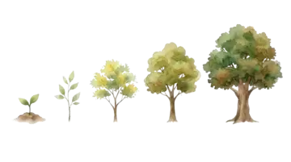

Nature Seed Tegn en bane. Før dem sammen.
Et gratis tegn-og-løs-fysikkpuslespill du kan spille i nettleseren. Tegn en linje med begrenset blekk, så blir den en rampe, bro eller oppsamlingspunkt som fører Water Drop frem til Seed. Hvert løste nivå gjenoppretter en akvarellskog.
Utgitt 18. september 2026 med 100 nivåer, stjerner for linjeeffektivitet og lagret fremgang. Det er gratis på itch.io, Game Jolt og indiexpo; iOS- og Android-versjonen er målet og er ennå ikke i appbutikkene.
Tegntegn med begrenset blekk
Koble sammenfør Water Drop til Seed
Blomstrefå skogen tilbake
Inni den nåværende builden
Det du tegner, blir en del av nivået.
Hver strek du bekrefter blir en fast gjenstand med ekte kollisjoner, og Water Drop og Seed reagerer på den. Både blekk og antall linjer er begrenset, så formen på linjen har betydning.
Utgivelsesstatus Utgitt 18. september 2026

Spilloversikt
Et avslappende tegn-og-løs-puslespill om å få to små figurer sammen.
Ideen
Tegn en bane, før Water Drop og Seed sammen og se den stille skissen bli levende igjen.
Lanseringsbuild
100 spillbare nivåer med berøringstegning, stjerner for linjeeffektivitet og fremgang som lagres mellom øktene.
Publikum
Spillere som liker rolige puslespill, lett fysikk, naturtemaer og stressfrie mobiløkter.
Status
Utgitt 18. september 2026 og gratis å spille i nettleseren. En mobilversjon er målet; den er ennå ikke i appbutikkene.
Funksjoner
Hva du gjør i Nature Seed.
Tegn for å løse fysiske baner
Hvert puslespill starter med terreng, Seed og Water Drop. Spillerens strek blir rampen, broen eller oppsamlingspunktet som forbinder dem.
Tydelig fysikktilbakemelding
Water Drop og Seed beveger seg på måter du kan følge, så et mislykket forsøk viser deg hva som må endres.
Skogrestaureringsbelønninger
Fullfør et nivå, og den skisserte scenen fylles med farge og voksende trær.
Korte nivåer, tegning med berøring
Nivåene er korte, og du tegner med berøring, noe som passer til raske økter på en telefon.
Spillsløyfe
Slik spiller du Nature Seed
- Trinn 01Les skissen
Se etter skråninger, hull og hindringer, og finn den tryggeste måten å koble sammen begge figurene på.
- Trinn 02Tegn linjen
Tegn linjen din. Streken blir en rampe, en føring eller et oppsamlingspunkt for figurene.
- Trinn 03Bekreft og observer
Bekreft linjen og se figurene reagere. Du kan se hva som fungerte og hva som ikke gjorde det.
- Trinn 04Blomstre eller foredle
Når Water Drop når Seed, kommer skogen tilbake. Hvis de bommer på hverandre, tegn på nytt med det du nettopp har lært.
Historie / verden
En skissert skog venter på vann.
Nature Seed begynte som et tegn-og-løs-fysikkpuslespill om å gjenopprette noe skjørt i stedet for å skyve gjenstander sammen.
Rollelisten er Seed, Water Drop og en skog som går fra skisse til farge igjen mens du spiller. Hvert puslespill er en liten jobb: studer landskapet, tegn en bane og hjelp vannet med å nå noe som kan vokse.
- Designretning
- Rolig fysikk og synlig restaurering
- Figurer
- Water Drop og Seed
- Interaksjon
- Berøringstegning
- Mestringsbelønning
- En énlinjes løsning gir tre stjerner
Oversikt
Gratis i nettleseren i dag, med mobil som mål.
Du får begrenset blekk og et begrenset antall linjer. Bruk dem til å føre Water Drop frem til Seed, spill deretter nivået om igjen og kutt løsningen ned til én linje for tre stjerner.
- Sjanger
- Tegn-og-løs-fysikkpuslespill
- Plattformmål
- iOS / Android
- Sesjonsform
- Korte rolige nivåer
Last ned ressurser
Nature Seed presse- og skaperressurser
WebP-forhåndsvisninger for pressedekning, utgivervurdering og referanser til butikksider. Kildefiler i full oppløsning er tilgjengelige på forespørsel.
Merkevare og karakterer
 Water DropDen blå figuren som må nå Seed.
Water DropDen blå figuren som må nå Seed.
 Seed-karakterDen grønne figuren Water Drop prøver å nå.
Seed-karakterDen grønne figuren Water Drop prøver å nå.


TrevekstTreet som vokser etter en løsning. SkogmenyBakgrunn for hovedmenyen.
SkogmenyBakgrunn for hovedmenyen.
 SpillbakgrunnNivåbakgrunn med et tomt spilleområde.
SpillbakgrunnNivåbakgrunn med et tomt spilleområde.
Tegn for å løse skissenivåer
 Skissenivå 01Skisse før løsningen.
Skissenivå 01Skisse før løsningen.
 Skissenivå 02Skisse før løsningen.
Skissenivå 02Skisse før løsningen.
 Skissenivå 03Skisse før løsningen.
Skissenivå 03Skisse før løsningen.
 Skissenivå 04Skisse før løsningen.
Skissenivå 04Skisse før løsningen.
 Skissenivå 05Skisse før løsningen.
Skissenivå 05Skisse før løsningen.
 Skissenivå 06Skisse før løsningen.
Skissenivå 06Skisse før løsningen.
 Skissenivå 07Skisse før løsningen.
Skissenivå 07Skisse før løsningen.
 Skissenivå 08Skisse før løsningen.
Skissenivå 08Skisse før løsningen.
 Skissenivå 09Skisse før løsningen.
Skissenivå 09Skisse før løsningen.
 Skissenivå 10Skisse før løsningen.
Skissenivå 10Skisse før løsningen.
Gjenopprettede puslespillscener
 Gjenopprettet nivå 01Gjenopprettet etter løsningen.
Gjenopprettet nivå 01Gjenopprettet etter løsningen.
 Gjenopprettet nivå 02Gjenopprettet etter løsningen.
Gjenopprettet nivå 02Gjenopprettet etter løsningen.
 Gjenopprettet nivå 03Gjenopprettet etter løsningen.
Gjenopprettet nivå 03Gjenopprettet etter løsningen.
 Gjenopprettet nivå 04Gjenopprettet etter løsningen.
Gjenopprettet nivå 04Gjenopprettet etter løsningen.
 Gjenopprettet nivå 05Gjenopprettet etter løsningen.
Gjenopprettet nivå 05Gjenopprettet etter løsningen.
 Gjenopprettet nivå 06Gjenopprettet etter løsningen.
Gjenopprettet nivå 06Gjenopprettet etter løsningen.
 Gjenopprettet nivå 07Gjenopprettet etter løsningen.
Gjenopprettet nivå 07Gjenopprettet etter løsningen.
 Gjenopprettet nivå 08Gjenopprettet etter løsningen.
Gjenopprettet nivå 08Gjenopprettet etter løsningen.
 Gjenopprettet nivå 09Gjenopprettet etter løsningen.
Gjenopprettet nivå 09Gjenopprettet etter løsningen.
 Gjenopprettet nivå 10Gjenopprettet etter løsningen.
Gjenopprettet nivå 10Gjenopprettet etter løsningen.
Utviklingstidslinje
Nature Seeds utviklingstidslinje
- Sommer 2025Originalt konsept
Nature Seed begynte som en idé til et rolig mobilt puslespill om forbindelse og gjenoppretting av naturen.
- oktober 2025Identitet for Seed og Water Drop
Vi fullførte designdokumentet og landet på Seed og Water Drop som hovedfigurer.
- desember 2025Utviklingen starter
Vi planla de første nivåene på papir, begynte deretter å bygge, og kjernesystemene ble spillbare.
- februar 2026Stor gjennomgang av utkastnivåer
En stor, grov gjennomgang av nivåene ga oss et grunnlag for senere finpuss og balansering.
- mars-april 2026Mekanikk og nivågjennomgang
Vi gikk gjennom ekstra mekanikker og utkastnivåer og forenklet eller omarbeidet dem for å holde spillet rolig.
- juli 2026Vertikal prototypegjennomgang
Juli-builden samlet tegning med begrenset blekk, effektivitetsstjerner, lagret fremgang og stabil linjegenerering i én spillbar sløyfe.
- 18. september 2026Nature Seed-utgivelse
Spillet kom ut som Nature Seed med 100 nivåer, stjerner for linjeeffektivitet, lagret fremgang og akvarellgjenopprettingsscener.
Nature Seed FAQ
Vanlige spørsmål om Nature Seed
Er Nature Seed gratis?
Ja. Du kan spille det gratis i nettleseren på itch.io, Game Jolt og indiexpo.
Er Nature Seed ute ennå?
Ja. Det kom ut 18. september 2026 med 100 nivåer. iOS- og Android-versjonen er målplattformen og er ennå ikke i appbutikkene.
Hva slags spill er Nature Seed?
Et avslappende tegn-og-løs-fysikkpuslespill. Linjene du tegner, blir til faste gjenstander som hjelper Water Drop og Seed å møtes.
Hvordan spiller man Nature Seed?
Les terrenget, tegn en rute med det begrensede blekket ditt, og se begge figurene reagere. Hvis de bommer på hverandre, tegn på nytt. Færre linjer gir flere stjerner, og én linje gir tre.
Hvem lager Nature Seed?
WillowinWorlds, et uavhengig studio som lager mobile puslespill og arkadespill.
Kan jeg bruke presseressursene til Nature Seed?
Ja, for presse, utgivervurdering og butikkreferanser. Kildefiler forblir private med mindre du ber oss om dem.
Nature Seed Devlog
Hva endret seg og når
- Nature Seed-utgivelse
Nature Seed kom ut under sin endelige tittel som et gratis nettleserspill på itch.io, Game Jolt og indiexpo, med 100 nivåer, stjerner for linjeeffektivitet og lagret fremgang.
- Nivå 2 restaurering og stabilitetspass
Nivå 2 bruker nå sitt produksjonsbakgrunnspar, med mer pålitelig nivåoppsett, kollisjonssjekker og tilbakemeldinger om fullføring.
- juli 2026Spillbar build
Juli-builden kombinerte linjetegning med begrenset blekk, effektivitetsstjerner, lagret fremgang og gjenopprettingstilbakemelding.
- april 2026Omarbeiding av nivåer
Etter en intern gjennomgang omarbeidet vi flere utkastnivåer for å kutte kompleksitet og gjøre dem lettere å lese på en telefon.
- mars 2026Mekanikkgjennomgang
Vi testet ekstra mekanikker og fjernet de som fikk nivåene til å føles overfylte.
- februar 2026Stor gjennomgang av utkastnivåer
En stor, grov gjennomgang av nivåene ble grunnlaget for senere finpuss og balansering.
- desember 2025Utviklingen starter
Kjernesystemene gikk fra designdokumentet til spillbar form.
- Sommer 2025Originalt konsept
Den første versjonen av Nature Seed var en rolig puslespillidé om forbindelse og gjenoppretting av naturen.